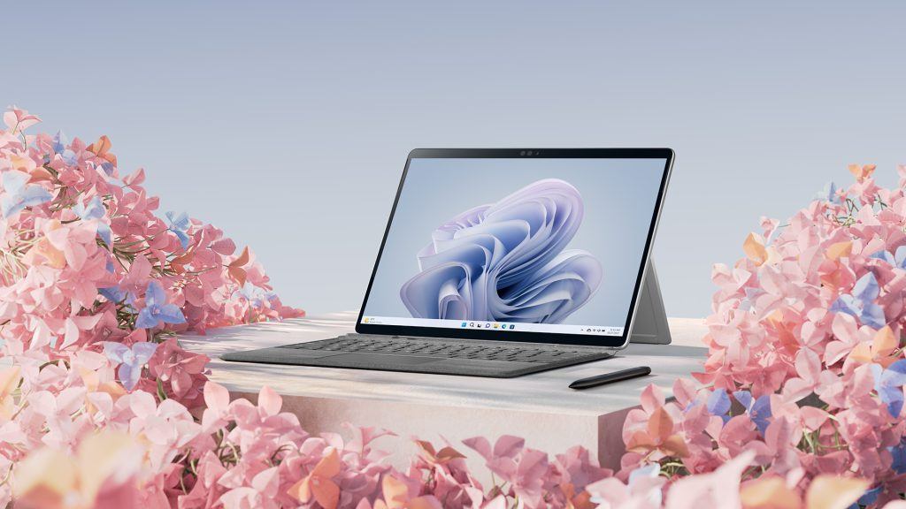
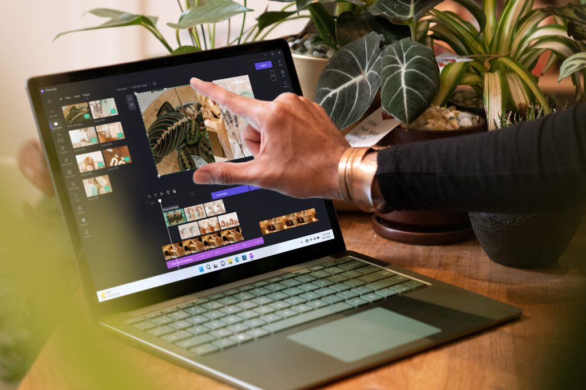

Introducing new Surface devices that take the Windows PC into the next era of computing
Today, we shared our vision for the next era of the Windows PC, where the PC and the cloud intersect and tap into innovative AI technology that unlocks new experiences. So that each of us can participate, be seen, heard and express our creativity. For nearly 40 years, the Windows PC has held a place at the center of our lives. It’s contributed to new levels of productivity, kept us all connected, and unlocked our creativity and potential through innovations we couldn’t have imagined when we first began this journey. Just think about how far we’ve come in how people interact with it. From the very first text-based keyboard input to the precision of point and click with the mouse, up to today, where touch, voice, pen and gestures all help people use the Windows PC more naturally and intuitively. From its inception, Surface has been a catalyst for that change. For the past 10 years, Surface has challenged the convention of the PC – through innovative form factors and new interaction models that transformed what the industry expects from a laptop, desktop, tablet and mobile productivity device. More importantly, Surface and Windows helped remove barriers, empowering each of us to connect, create, work, learn and play in ways that are new and natural. Bringing the best of Microsoft together on a single device.
As a team, we’re proud of where we’ve been, but our focus is on where we’re going. With Windows 11, new Surface products and new apps and experiences like Microsoft Designer and Image Creator, today we take the next step on our journey.
- Meet Surface Pro 9:
- Meet Surface Laptop 5:
- Meet Surface Studio 2+:

Surface Pro began as the first of its category – A tablet that can replace your laptop, offering touch, ink, a full-size precision touchpad, and a productive keyboard finely crafted and satisfying to touch. Over the years it’s been refined, tuned and perfected. In that same time, we’ve seen the category take off. Today, you don’t have to go far to see competing interpretations. We take great pride in our ability to inspire and push the industry forward. Still, there’s a reason why Surface Pro remains the 2-in-1 to beat, and it comes back to the original vision the team shared a decade ago that merged the benefits of a powerful laptop, versatile tablet and ink-ready studio. Today, Surface Pro 9 raises the bar again.

Seven years ago, we applied our learnings and experiences from Surface Pro to a more conventional device category, the laptop. Almost immediately, Surface Laptop became our most loved Surface. In the years since, it’s continued to earn this position. Whether creating, communicating or connecting, people delight in how Surface Laptop helps them immediately get into their flow. From the effortless opening and fast log-in with Windows Hello, to the touchscreen, precision touchpad and perfect typing experience, Surface Laptop 5 offers the craftsmanship, comfort and capabilities to jump in and produce your best work.

ln the fall of 2016 we unveiled the first Surface Studio. It was unlike anything else, and instantly captured people’s imaginations. With the large and vibrant 28-inch 3:2 display, and stylish form, this product turned heads. When we showed how the Zero Gravity Hinge could transform the display into the ultimate creative canvas, people were stunned. Even today, Surface Studio has the unique ability to draw people in. As work environments have evolved in recent years, we’ve seen strong ongoing demand for this elegant, powerful and versatile product. As we meet that demand, we’ve rearchitected our Surface Studio processing engine utilizing an updated Intel® Core™ i7 H Series processor, with up to 50% faster CPU performance. We’ve designed NVIDIA GeForce RTX 3060 discrete graphics to double the graphics performance, achieving the most realistic ray-traced graphics when you craft 3D designs or render models. We’ve enhanced and modernized the display, cameras, Studio Mics and ports – including USB-C with Thunderbolt 4. With Windows 11, Surface Studio 2+ also meets Secured-core PC standards.